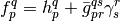
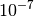

DCFT: Density Cumulant Functional Theory¶
Code author: Alexander Yu. Sokolov and Andrew C. Simmonett
Section author: Alexander Yu. Sokolov
Module: Keywords, PSI Variables, DCFT
Theory¶
Density cumulant functional theory (DCFT) is a density-based ab initio theory that can compute electronic energies without the use of the wavefunction. The theory starts by writing the exact energy expression in terms of the one- and two-particle density matrices (OPDM and TPDM):

Here we used Einstein convention for the summation over the repeated indices,
 and
and  are the standard one- and two-electron integrals,
are the standard one- and two-electron integrals,
 and
and  are the elements of the OPDM and TPDM,
respectively. Naively, one might expect that it is possible to minimize the
energy functional in the equation above and obtain the exact energy. This is,
however, not trivial, as the density matrix elements and
cannot be varied arbitrarily, but must satisfy some
conditions that make sure that the density matrices are N-representable, i.e.
correspond to an antisymmetric N-electron wavefunction. Unfortunately, no
simple set of necessary and sufficient N-representability conditions are known,
and some of the known conditions are not easily imposed. In addition, the lack
of separability of the density matrices may result in the loss of
size-consistency and size-extensivity. In DCFT one takes a different route and
replaces the TPDM in favor of its two-particle density cumulant:
are the elements of the OPDM and TPDM,
respectively. Naively, one might expect that it is possible to minimize the
energy functional in the equation above and obtain the exact energy. This is,
however, not trivial, as the density matrix elements and
cannot be varied arbitrarily, but must satisfy some
conditions that make sure that the density matrices are N-representable, i.e.
correspond to an antisymmetric N-electron wavefunction. Unfortunately, no
simple set of necessary and sufficient N-representability conditions are known,
and some of the known conditions are not easily imposed. In addition, the lack
of separability of the density matrices may result in the loss of
size-consistency and size-extensivity. In DCFT one takes a different route and
replaces the TPDM in favor of its two-particle density cumulant:

The one-particle density matrix is separated into its idempotent part
 and a correction
and a correction  :
:

The idempotent part of the OPDM corresponds to a Hartree-Fock-like density of
non-interacting electrons, while the non-idempotent correction
depends on the density cumulant and describes the electron correlation effects.
Inserting the above two equations into the energy expression, we obtain:

where the antisymmetrized two-electron integrals and the generalized Fock operator matrix elements were defined as follows:


Energy functional  has several important properties. First,
the energy is now a function of two types of independent parameters, the
idempotent part of OPDM and the density cumulant
has several important properties. First,
the energy is now a function of two types of independent parameters, the
idempotent part of OPDM and the density cumulant
 . As a result, the energy functional is Hermitian,
which is important for the evaluation of the molecular properties. The additive
separability of the density cumulant guarantees that all of the DCFT methods
are size-extensive and size-consistent. Furthermore, the N-representability
problem is now greatly simplified, because the idempotent part of the OPDM is
N-representable by construction. One only needs to worry about the
N-representability of the density cumulant, which is a relatively small part of
the TPDM.
. As a result, the energy functional is Hermitian,
which is important for the evaluation of the molecular properties. The additive
separability of the density cumulant guarantees that all of the DCFT methods
are size-extensive and size-consistent. Furthermore, the N-representability
problem is now greatly simplified, because the idempotent part of the OPDM is
N-representable by construction. One only needs to worry about the
N-representability of the density cumulant, which is a relatively small part of
the TPDM.
In order to obtain the DCFT energy, two conditions must be satisfied:
1) The energy must be stationary with respect to the variation of the
idempotent part of the one-particle density matrix . This is
achieved by the self-consistent diagonalization of the generalized Fock
operator matrix defined above, which introduces the relaxation of the orbitals.
2) The energy must be stationary with respect to the variation of the density
cumulant , constrained to the N-representability conditions.
Making the energy stationary requires the solution of the two sets of coupled equations for the orbital and cumulant updates, respectively (also known as residual equations). At the present moment three different algorithms for the solution of the system of coupled equations are available (see section Iterative Algorithms for details).
Publications resulting from the use of the DCFT code should cite contributions listed here.
Methods¶
Currently two DCFT methods (functionals) are available: DC-06 and DC-12. Both
methods use approximate N-representability conditions derived from the
second-order perturbation theory, but differ in the description of the
correlated (non-idempotent) part of the one-particle density
matrix. While in the DC-06 method is derived from the density cumulant
in an approximate way, the DC-12 method derives this contribution exactly, and
therefore takes full advantage of the N-representability conditions. Both DC-06
and DC-12 methods have similar computational cost. However, the DC-12 method
usually exhibits much better numerical stability and can be significantly
cheaper than the DC-06 in the problematic cases as the result of the improved
convergence. For the comparison of the quality of these methods we refer
user to the recent publications.
The DCFT functional can be specified by the DCFT_FUNCTIONAL option. The default choice is the DC-06 functional. In addition to the two methods listed above, DCFT_FUNCTIONAL option can be set to CEPA0 (coupled electron pair approximation zero, equivalent to linearized coupled cluster doubles method, LCCD). CEPA0 can be considered as a particular case of the DC-06 and DC-12 methods in the limit of zero non-idempotency of OPDM. This option has a limited functionality and should only be used for the test purposes.
At the present moment DCFT computations can only be run with the unrestricted orbitals. If the REFERENCE option is not specified in the input file, the PSI4 Python driver will conveniently set it to UHF for the DCFT computations.
Iterative Algorithms¶
As explained in the Theory section, in order to obtain the DCFT energy one needs to solve the system of coupled equations for the orbitals and the density cumulant. At the present moment three iterative algorithms for the solution of the equations are available. The choice of the algorithm is controlled using the ALGORITHM option.
1) Two-step algorithm (can be invoked by setting ALGORITHM option to TWOSTEP and is currently the default). In two-step algorithm the DCFT equations are solved in macroiterations. Each macroiteration consists of two sets of microiterations. In the first set the density cumulant equations are solved iteratively, while the orbitals are kept fixed. After the density cumulant is converged, the second set of microiterations is performed for the self-consistent update of the orbitals with the fixed density cumulant. Each macroiteration is completed by performing the orbital transformation of the integrals. The convergence of the two-step algorithm is accelerated using the DIIS extrapolation technique.
2) Simultaneous algorithm (set ALGORITHM to SIMULTANEOUS). In this algorithm each macroiteration consists of a single iteration of the cumulant update followed by a single iteration of the orbital update and orbital transformation of the integrals. The macroiterations are repeated until the simultaneous convergence of the cumulant and the orbitals is achieved. As in the two-step algorithm, the DIIS extrapolation is used to accelerate the convergence.
3) Quadratically-convergent algorithm (set ALGORITHM to QC). The orbital and cumulant update equations are solved using the Newton-Raphson method. Each macroiteration of the quadratically-convergent algorithm consists of a single Newton-Raphson update followed by the orbital transformation of the integrals. The solution of the Newton-Raphson equations is performed iteratively using the preconditioned conjugate gradients method, where only the product of the electronic Hessian with the step vector is computed for efficiency. The electronic Hessian is build for both the cumulant and orbital updates and both updates are performed simultaneously. By default the electronic Hessian also contains the matrix elements that couple the orbitals and the density cumulant. The computation of these coupling elements increases the cost of the macroiteration, but usually leads to faster convergence and is recommended for open-shell systems. If the computation of the coupling elements is not desired, it can be turned off by setting QC_COUPLING to FALSE. It is important to note that the quadratically-convergent algorithm is not yet fully optimized and often converges slowly when the RMS of the cumulant or the orbital gradient is below .
The choice of the iterative algorithm can significantly affect the cost of the
energy computation. While the two-step algorithm requires a small number of
disk-intensive  integral transformations, the simultaneous
algorithm benefits from a smaller number of expensive
integral transformations, the simultaneous
algorithm benefits from a smaller number of expensive  cumulant updates. As a result, for the small closed-shell systems the two-step
algorithm is usually preferred, while for the larger systems and the molecules with the
open-shell character it is recommended to use the simultaneous algorithm. The
efficiency of the simultaneous algorithm can be greatly increased by avoiding
the transformation of the four-index virtual two-electron integrals
cumulant updates. As a result, for the small closed-shell systems the two-step
algorithm is usually preferred, while for the larger systems and the molecules with the
open-shell character it is recommended to use the simultaneous algorithm. The
efficiency of the simultaneous algorithm can be greatly increased by avoiding
the transformation of the four-index virtual two-electron integrals
 and computing the terms that involve these integrals in the AO
basis. In order to do that one needs to set the AO_BASIS option to
DISK. For more recommendations on the choice of the algorithm see
Recommendations section.
and computing the terms that involve these integrals in the AO
basis. In order to do that one needs to set the AO_BASIS option to
DISK. For more recommendations on the choice of the algorithm see
Recommendations section.
Analytic Gradients¶
Analytic gradients are available for the DC-06 method. Gradients are only available if the ALGORITHM option is set to TWOSTEP or SIMULTANEOUS for the energy computation. Evaluation of the analytic gradients requires the solution of the coupled response equations. Two algorithms are available for their iterative solution: two-step (default) and simultaneous. These algorithms are similar to those described for the orbital and cumulant updates in the Iterative Algorithms section and usually exhibit the similar efficiency. The choice of the algorithm can be made using the RESPONSE_ALGORITHM option. For the DC-12 method the analytic gradients are not yet available, one has to use numerical gradients to perform the geometry optimizations.
Minimal Input¶
Minimal input for the DCFT single-point computation looks like this:
molecule {
H
H 1 1.0
}
set basis 3-21G
energy('dcft')
The energy('dcft') call to energy() executes the DCFT module, which will first call the SCF module and perform the SCF computation with UHF reference to obtain the guess for the DCFT orbitals. After the SCF is converged, the program will perform the energy computation using the DC-06 method. By default, the two-step algorithm will be used for the solution of the equations. Note that while the default value for the option REFERENCE is RHF, this option is set to UHF before the DCFT module is executed. For the DC-06 method one can also request to perform the geometry optimization following the example below:
molecule {
H
H 1 1.0
}
set basis 3-21G
optimize('dcft')
The optimize('dcft') call will first perform all of the procedures described above to obtain the DC-06 energy. After that the DC-06 analytic gradients code will be executed to perform the solution of the DCFT response equations, compute the analytic gradients of the DCFT energy and perform the geometry optimization.
Recommendations¶
Here is the list of the recommendations for the DCFT module:
- For the computations of small systems (less than 150 basis functions and high symmetry) the use of the default parameters is recommended, including the choice of the two-step algorithm.
- For large systems (more than 150 basis functions) the simultaneous algorithm
is preferred and can be significantly faster than two-step, as the result of
smaller number of the expensive steps. In addition,
significant savings can be achieved if one sets AO_BASIS option to
DISK together with simultaneous algorithm.
- In the case when insufficient memory is available, set AO_BASIS option to DISK. This will significantly reduce the memory requirements. However, when used together with the two-step algorithm, this option can significantly increase the cost of the energy computation.
- In the case when the oscillatory convergence is observed before the DIIS
extrapolation is initialized, it is recommended to increase the threshold for
the RMS of the density cumulant or orbital update residual, below which the
DIIS extrapolation starts. This can be done by setting
DIIS_START_CONVERGENCE option to the value greater than
 by one or two orders of magnitude (e.g.
by one or two orders of magnitude (e.g.  or
or
 ).
). - If the oscillatory convergence is observed for atoms or molecules with high symmetry, it is recommended to use quadratically-convergent algorithm.
- When using quadratically-convergent algorithm for closed-shell molecules, it is recommended to set QC_COUPLING option to FALSE for efficiency reasons.